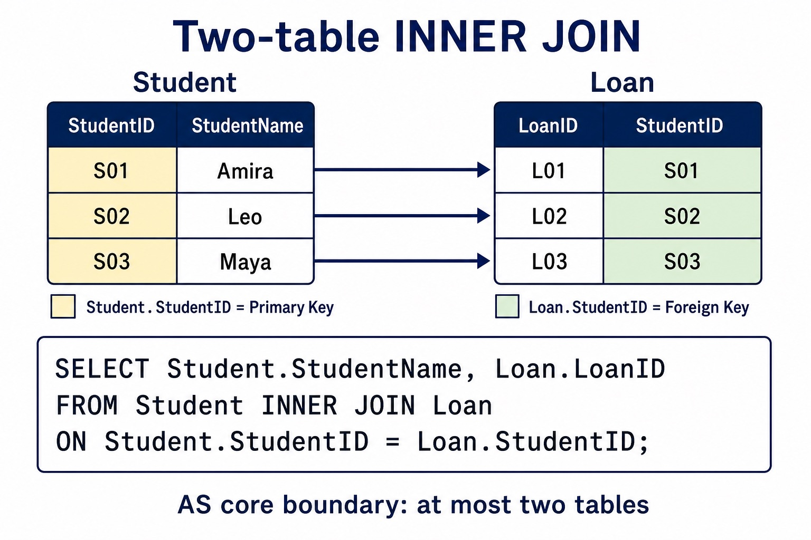

Use DML on at most two tables: SELECT, FROM, WHERE, ORDER BY, GROUP BY, INNER JOIN, SUM, COUNT and AVG.
Visual overview
Two-table INNER JOIN with ON

Visual transcript
- AS DML questions use at most two tables.
- SELECT Student.StudentName FROM Student INNER JOIN Loan ON Student.StudentID = Loan.StudentID uses an explicit two-table join.
- ON states the matching key relationship between the tables.
- WHERE adds a separate row filter after the join; it does not replace the required INNER JOIN syntax.
Core explanation
A query uses SELECT fields FROM a table, may filter rows with WHERE, sort with ORDER BY and form aggregate groups with GROUP BY. SUM totals values, COUNT counts rows or values, and AVG calculates a mean. An INNER JOIN uses ON to match at most two tables in the required AS queries.
A two-table DML query uses one explicit join. Write an explicit INNER JOIN between those tables and place the matching key condition after ON; use table-qualified field names where the same field name could be ambiguous.
Structured Query Language (SQL) is the industry-standard language used by a DBMS for DDL and DML. To understand a statement, read each clause by its effect: SELECT chooses output fields, FROM identifies the source table, and WHERE filters records using a condition. Keywords, field names, table names, operators, literal values and punctuation have different roles.
A valid answer must preserve the requested semantics, not merely contain familiar keywords. Text and date values are normally quoted using standard SQL literal syntax; numeric and Boolean values are not quoted. Clause order, comparison operators and requested output fields determine which records and columns appear.